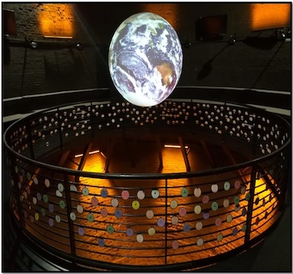
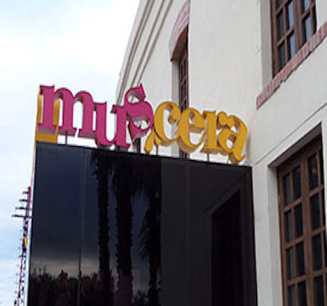
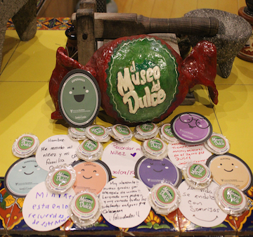

Todas las experiencias de un Museo Positivo cuentan con un fundamento científico basado en la ciencia de la Psicología Positiva (Seligman, 2016) y el enfoque de El Arte como Terapia (De Botton & Armstrong, 2017).
Museos en Nuevo León
Diferentes Actividades
Visitantes
Recorridos virtuales de bienestar
Visitantes Virtuales